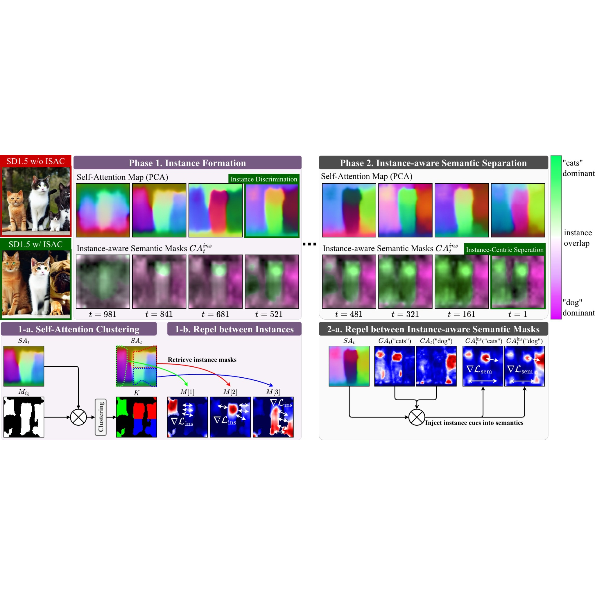
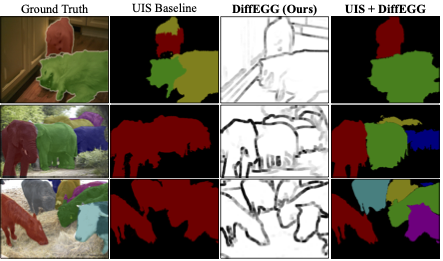

Research
My research is focused on generative AI and its applications in various domains, including
creative art and macromolecular design.
|
|

|
ISAC: Training-Free Instance-to-Semantic Attention Control for Improving Multi-Instance
Generation
*, Wooyeol Lee*,
*, †
arXiv preprint, 2025
paper
Aligning guidance strategy with instance-to-semantic dynamics, where instance layout form first
then semantic details are refined, is crucial for effective multi-instance generation.
|
|

|
DiffEGG: Diffusion-Driven Edge Generation as a Pixel-Annotation-Free Alternative for Instance
Annotation
*, *,
Wooyeol Lee, †
arXiv preprint, 2025
paper
Diffusion models, capable of generating multiple instances, are secretly powerful tools for
instance segmentation.
|
|